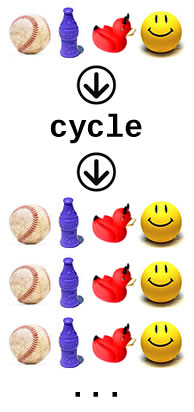

It Takes As Many As It Takes.
Enumerable#cycle is a concept that took me about 30 minutes of reading and re-reading to understand. It is an incredibly powerful module that The resource that helped me understand it best is Global Nerdy Global Nerdy asserts that "Given a collection, enumerable#cycle creates an infinitely-repeating ordered source of its items, AND it expets an optional block to act on the items in the infinitely repeating until the break statement is encountered.." Enumerable#cycle can be called on any enumerable object (such as a range, hash, or array). When called, a block will be run, either "n"times (Passing an argument to "cycle" will completely iterate through the collection that many times.)or forever if no number is passed as an argument.
1arr.cycle(2) { |i| puts i }
2first
3middle
4last
5first
6middle
7last
If no argument is passed, it produces an infinite loop.
A great use of the enumerable#cycle module is using it to create an object that spits out the next item in a repeating sequence. Here is a great example from Global Nerdy.
This will print the days of the week over and over, forever, until you stop it with control-c.
days_of_week.cycle {|day| puts day}
=> Monday
Tuesday
Wednesday
Thursday
Friday
Saturday
Sunday
Monday
Tuesday
...
The cycle can be broken with the "break" statement
days_of_week.cycle do |day|
puts day
break if day == "Friday"
end
=> Monday
Tuesday
Wednesday
Thursday
Friday
=> nil
Another great resource for learning about Enumerator#cycle is Sitepoint.com. Check it out!